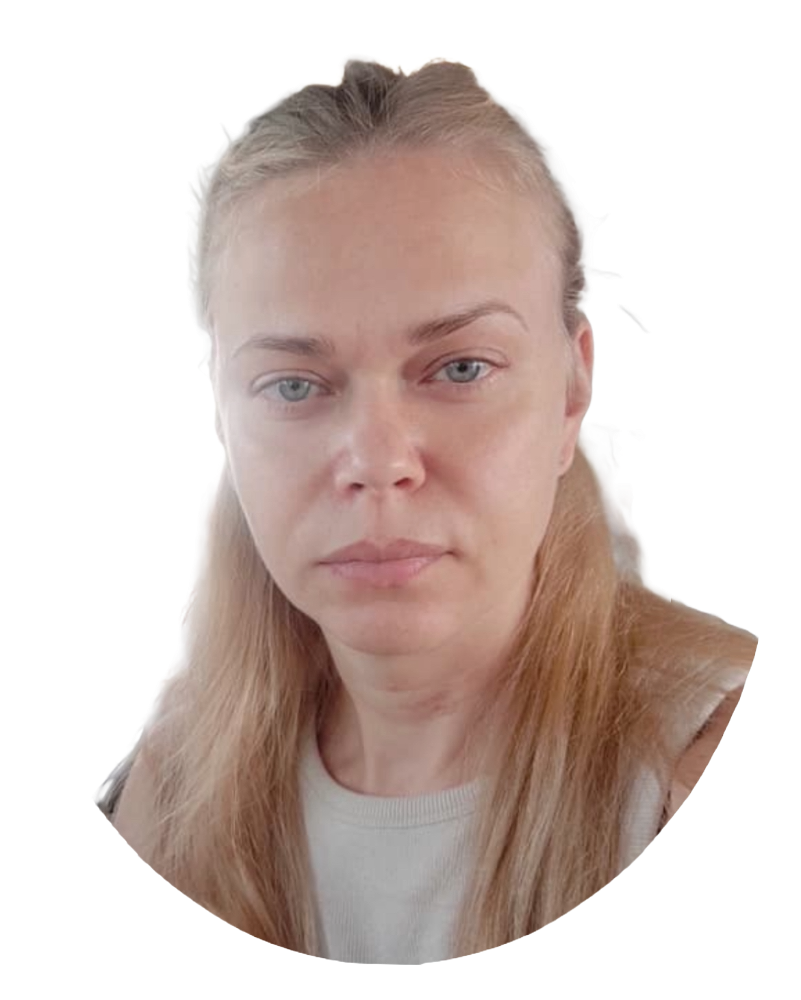

wird
gearbeitet
MAIIA PUSHKAROVA
Junior-Entwickler
KONTAKT
- Birkenweg 1
- 6142 Gettnau
- +41 79 520 83 85
- maya2882@gmail.com
BEWERBUNG
als Jobtitel bei der Firma GOOGLE

PERSÖNLICHES
- 28. Januare 1982 / Donetsk
- Ukraine (S - Ausweis)
- verheiratet, keine Kinder
Geburtsdatum- / Ort
Staatsangehörigkeit
Familienstand


KENNTNISSE
- Russisch - Muttersprache
- Ukrainisch - Fliessend
- Englisch - Grundkenntnisse
- Deutsch - B1
Sprachekenntnisse
- Webentwicklung
- Android App-Entwicklung
- Datenbanken
- Testen und Debugging
Technische Fähigkeiten
- C++
- C
- C#
- Java
Programmiersprachen
MAIIA PUSHKAROVA
BERUFSERFARUNG
- Pflege der Berichtsdokumentation
- Verfolgung von Debitorenkonten
- Sammeln von Bestellungen und Organisieren der Warenlieferung an Agenten
Verkaufsleiterin
Eigenes Geschäft selbstständig, 11/2017-02/2022
- Entwicklung optimaler Präsentations- und Warenbestände im Einzelhandel
- Verfolgung von Debitorenkonten
- Pflege der Berichtsdokumentation
- Verhandeln
Verkaufsleiterin
"Royal Canin", 07/2015-10/2017
Aussendienstmitarbeiter
Einzelhandel mit Tiefkühlkost "Muschketer", 10/2008-10/2014
- Einzelhandel mit Tiefkühlkost, 09/2006-09/2008
PC-Operator
- Casino "Volna" Donetsk, 10/2000-05/2006
Croupierin
- Spring Boot
- Thymeleaf
- HTML
- SQL
- Objektorientiert
- REST-APIs
- Hibernate ORM
Fertigkeiten
SOFT SKILLS
- Lernbereitschaft
- Geduld und Durchhaltevermögen
- Teamarbeit
- Flexibilität
- Kritikfähigkeit
- Eigeninitiative
- Anpassungsfähigkeit
INTERESSEN
- Lesen
- Velofahren
- Vögel, insbesondere Papageien
- Sportaktivitäten
BILDUNGSWEG
- Nationale Universität Ukraine, 09/2000 - 06/2006
- Studiengang Mathematik
- Mathematik- und Informatiklehrerin
- Oberschule , Donetsk Ukraine, 09/1997 - 07/1999
- Basisschule, Donetsk Ukraine, 09/1989 - 06/1997
WEITERBILDUNG
- Computerakademie "ItStep" Ukraine, 11/2018 - 05/2022
- Full-Stack-Entwickler
Name Firma
Herr / Frau
Vorname Nachname
Strasse
PLZ Ort
Luzern, 27. Mai 2024
Bewerbung als XY 100%
Sehr geehrter Herr /Frau XY
Durch Frau Egli, Fachspezialistin Integration von der Dienstelle Asyl- und Flüchtlingswesen bin ich auf
die Stellenausschreibung xy aufmerksam geworden.
Ich bin zusammen mit xy und xy am xy aus der Ukraine geflüchtet und habe dort über zehn Jahre als
xy gearbeitet. Leider ist es für mich aufgrund meiner Situation und meiner Sprachkenntnisse sehr
schwierig eine Stelle im Bereich meiner Ausbildung zu finden. Ich würde mich deshalb sehr freuen,
wenn ich in der xy erste Arbeitserfahrungen sammeln könnte, um so mein Können und Wissen unter
Beweis zu stellen. Ich möchte mir in der Schweiz ein neues Leben aufbauen und so schnell wie
möglich unabhängig von der Wirtschaftlichen Sozialhilfe sein.
Aktuell lasse ich alle meine Diplome übersetzen und anerkennen. Im Deutsch habe ich das Niveau B1
erfolgreich abgeschlossen und lege bald die Prüfung fürs B2 ab. Mein Ziel ist es, auch das C1
Sprachdiplom zu erwerben, um mich persönlich weiterzubilden und meine
Arbeitsintegrationschancen zu steigern.
Über eine Einladung zu einem persönlichen Vorstellungsgespräch freue ich mich.
Freundliche Grüsse
UNTERSCHRIFT
Vorname Nachname